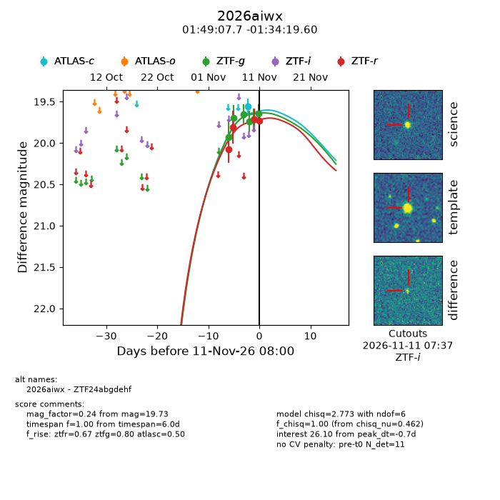
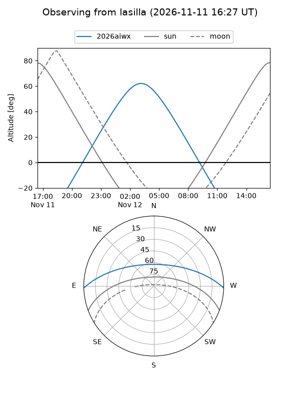
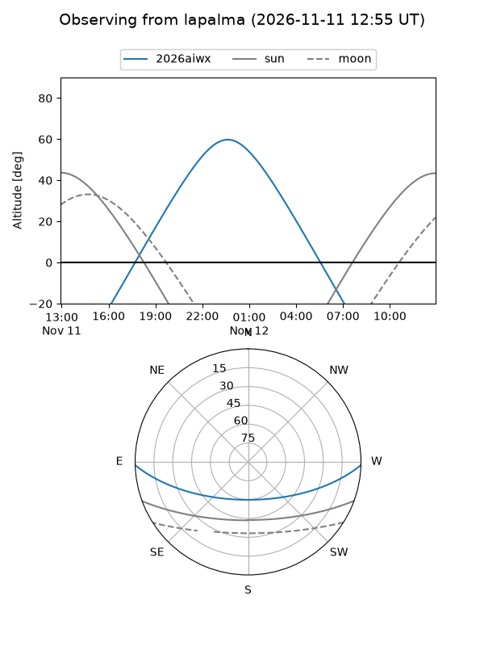
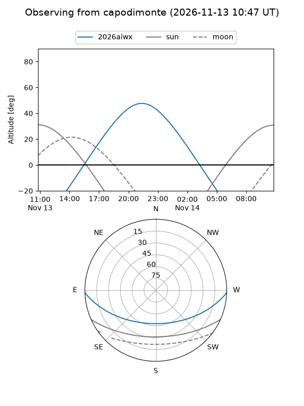
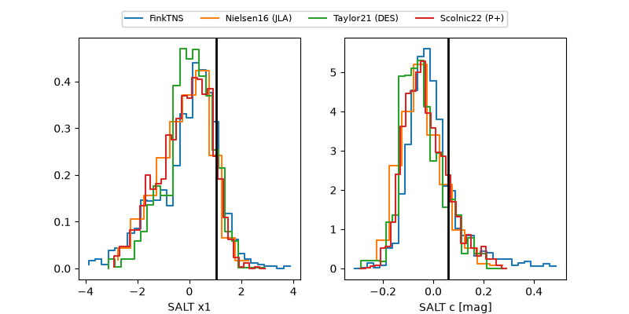

2026aiwx
Target 2026aiwx at 2026-11-11 08:02
Aliases and brokers:
FINK-ZTF: ztf.fink-portal.org/ZTF24abgdehf
Lasair-ZTF: lasair-ztf.lsst.ac.uk/objects/ZTF24abgdehf
ALeRCE-ZTF: alerce.online/object/ZTF24abgdehf
YSE-PZ: ziggy.ucolick.org/yse/transient_detail/2026aiwx
TNS name: wis-tns.org/object/2026aiwx
Direct TNS query: direct search
alt names
ZTF24abgdehf (ztf,fink_ztf)
2026aiwx (tns,yse)
Coordinates:
equatorial (ra, dec) = 27.2822,-1.57211
equatorial (HMS+DMS) = 01:49:07.72,-01:34:19.60
galactic (l, b) = (153.7704,-60.94161)
Flags:
peak dt: -0.7
Photometry:
last atlasc=19.56, ztfg=19.64, ztfr=19.73
1 atlasc, 6 ztfg, 4 ztfr detections
Lightcurve

Visibility



Additional plots
